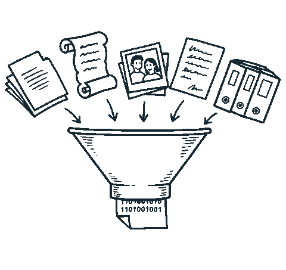
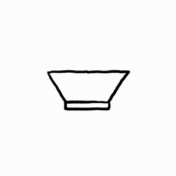
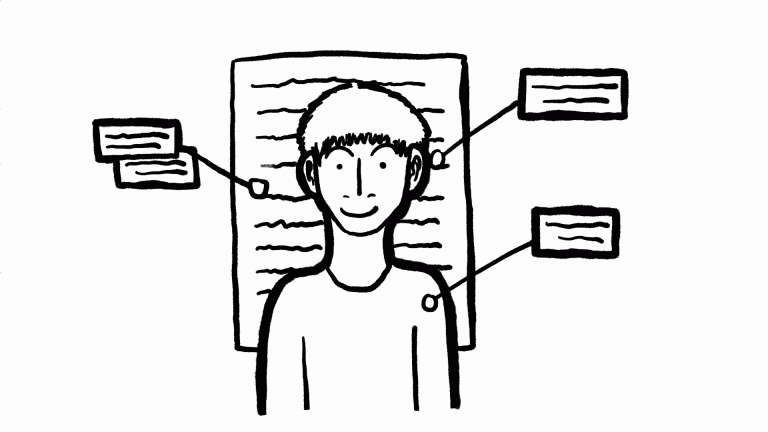

Aus Stapelweise Dokumentenwerden strukturierte Daten.
Egal auf welchem Weg: Post.
Egal in welchem Format: Brief.
Dass wir jeden Tag mindestens 1-2 Stunden allein mit dem Sortieren von allem Kram verbringen, der von Versicherungen, Fachkollegen, Patienten etc. reinkommt: wir dachten, das geht eben nicht anders. Mit Stapelweise sparen wir uns 90% der Zeit, fast einen ganzen Arbeitstag pro Woche.
Im Schaufenster anschauen →Vom Dokumentenchaos zu strukturierten Daten
Verwandeln Sie Dokumente in verlässliche und strukturierte Datenobjekte. Egal welches Dateiformat, welche Schriftart oder gar Handschrift, ob Formular, Fließtext oder Tabelle, ob Deutsch, Englisch oder Kiswahili.
Stapelweise.
Wie es funktioniert
Methodik trifft führende KI-Technologie.
0. Konfiguration
Festlegung der relevanten Datenpunkte, von Informationsparametern, Kontextwissen, Zielformaten und Zielsystemen.
1. Import
Sammelpunkt
Für Dokumente aus allen denkbaren Quellen. E-Mail, SFTP, Cloud-Ordner, Scanner, Upload-Funktionen, APIs.
2. Splitting
Segmentierung und Sortierung großer Inputmengen in klar abgrenzbare Dokumente
Große Dateien aus vielen verschiedenen Unterlagen werden in einzelne Dokumente auseinandergepuzzelt.
3. Extrahierung
Kontextbasierte Klassifizierung von Dokumenten und Datenpunkten
Zum Beispiel nach Dokumenttyp, nach Zielsystem, nach Nutzung.
Extraktion von Datenpunkten
Auf Basis von konfigurierten Informationsbedarfen, siehe Schritt 0.
4. Validierung
Qualitätscheck: automatisiert oder manuell
Je nach Bedarf und Anforderungen.
Plausibilitätsprüfung
Nachvollziehen der Binnen-Konsistenz von Datenpunkten; Identifikation von Fehl-Extraktionen und -Klassifizierungen. Bei Bedarf auch Vorab-Abgleich neuer Datenpunkte mit vorhandenen Informationen im Zielsystem, zum Beispiel neue gegen frühere Angaben oder die Kombination aus Name und Geburtsdatum.
5. Anreicherung
Aufbereitung und Transformation
Extrahierte und qualitätsgesicherte Datenpunkte werden in das neue Zielformat transformiert.
Kontextbasierte Anreicherung von Datenpunkten
Zum Beispiel mit Kontextwissen wie Diagnoseschlüsseln oder Handlungsempfehlungen.
6. Aktion
Weitergabe in ein beliebiges Zielsystem
Zum Beispiel ein CRM, eine Datenbank, ein Praxisverwaltungssystem (PVS), eine Kanzleisoftware, eine Schadensmanagementsoftware oder ein Personalmanagementsystem.


Wir bändigen die Dokumenten- und Datenflut.
Über verschiedene Branchen, Formate und Anwendungsfälle hinweg.
Weniger suchen. Weniger sortieren. Mehr schaffen.
100% sicher mit einem 100% Zuhause-Setup
Nutzen Sie Stapelweise auf 100% lokaler Infrastruktur: einer eigenen VPC oder sogar eigener Hardware. Gerne beraten wir Sie zu den Optionen.
Mehr zu 100% Zuhause-Optionen →Vom Schadensfall zur Leistungsprüfung ohne manuellen Abgleich
70% kürzere Bearbeitungsdauer Ganze Fallstudie lesen →Ein Posteingang der sich selbst sortiert
1 Std./Tag Zeitersparnis Ganze Fallstudie lesen →Von 250 Aktenordnern zu strukturierten und durchsuchbaren Personalakten
7 Tage statt 6-monatige Migration Ganze Fallstudie lesen →Stapelweise im Vergleich
| Stapelweise | Claude / ChatGPT | andere Cloud-Werkzeuge | Manuell | |
|---|---|---|---|---|
| Datensicherheit | Lokal, geschützt, ohne Cloud möglich | Nur Cloudbetrieb | Nur Cloudbetrieb | Anfällig für Fehler und Sicherheitslücken |
| Branchen- und Fachkontext | Vorkonfiguriert je Branche. Direkt an spezifische CRM, PVS, DATEV oder DMS angebunden. | Jedes Mal neu zu klären. | Allgemeine Texterkennung ohne Fachkontext. | Vorhanden, personengebunden. |
| Anbindung an Bestandssysteme | Direkte Schnittstellen bzw. Workflow-Anbindung. | Zusätzliche Workflow-Automatisierung nötig. | Teilweise, oft gebunden an spezifische Zielsysteme. | Flexibel, aber hochaufwändig, da händisch. |
| Kontrolle und Nachvollziehbarkeit | Strukturierte Plausibilitätsprüfung auf Basis von Vorkonfiguration und Kontext. | Kontext an einzelne Nutzer-Accounts gebunden. | Teilweise. | Volle Kontrolle, aber lange Bearbeitungsdauer. |
| Aufwand pro Dokument | Automatisiert. 2 Sekunden bis 5 Minuten, je nach Größe. | Prompting für jedes Dokument, jeden Fall aufs Neue. | Hoher Setup-Aufwand für effiziente Integration in Workflows. | Hoch. |